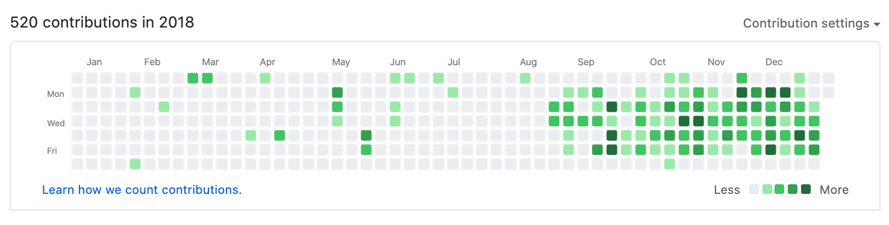
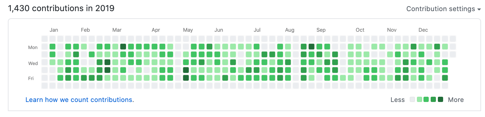
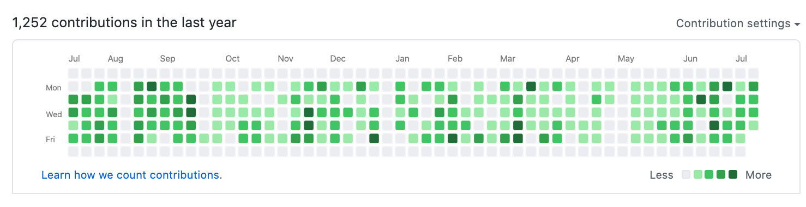
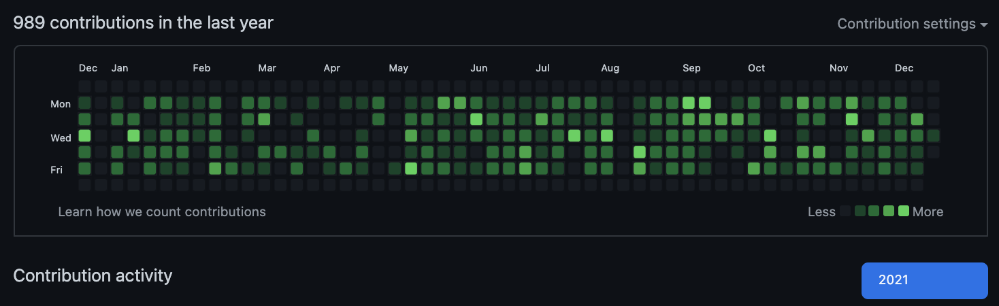

Portfolio
| このページ | 隙間時間を見て更新する感じ |
|---|---|
| Qiita | 気が向いた時に備忘録的な使い方してます。1日一回トレンドをちらちら見る感じ |
| Github | 時々思いついたものを作ったり。お仕事は（当然）privateのみなので草のみ提示。趣味はセンシティブな情報以外はオープンにしてます。 |
| TimeIsMoney | 昔JScriptを使って作った時給シミュレーターをherokuでflaskとvue3で打ち直したもの。pythonにしたのはなんとなく |
| 推し事しませんか？ | 準備中（オープンなコミュニティ調整予定でしたがYouTubeApiの限界を突破しないとならずペンディング中） |
| YoutubeHub | 推し事しませんか？ではきつかった仕様を絞ったもの。Youtube配信者向けでフォローしてくれている人の表示と1年でどれくらい配信しているかをGithubの草っぽく表示してくれるWebアプリ |
| 2018_仕事 |  |
| 2019_仕事 |  |
| 2020_仕事 |  |
| 2021_仕事 |  |
Skill
保有資格
- 12cSQL
- RUBY SILVER
- Pythonエンジニア認定基礎
- JAVA SILVER
- PHP5技術者認定初級
WEB未経験時代に取得。でも資格ってSESしたり受託したりする時の最低保証でしかないと思ってます。知識を数値化する意味だと不要って事もないとは思いますが・・・
職歴
株式会社イトクロ[2020-09〜]
Sendyou IncがM&Aされて形上では転職といった形。やっている事はSendyou Incとほぼ同じ。
使用した技術及びサイト・ソフトの羅列
- Ruby
- Rails
- nginx
- Mysql
- docker
- docker-compose
- Javascript
- vue
- aws
- wordpress
- git
- github
- shell script
- linuxOS（MACとAmazonLinux）
- Go言語
- circle ci
- Google App Script
- SpreadSheet
その他いろいろ（凄く詳しいわけではありません。凄く詳しい人がいたので相談しつつといった形）
Sendyou inc[2018-08〜2020-09]
コドモブースター新規・保守、フロント・バック・インフラまで触らせて貰いました。
コモリブ保守
使用した技術及びサイト・ソフトの羅列
- Ruby
- Rails
- nginx
- Mysql
- docker
- docker-compose
- Javascript
- vue
- aws
- wordpress
- git
- github
- shell script
- linuxOS（MACとAmazonLinux）
- Go言語
- circle ci
- Google App Script
- SpreadSheet
その他いろいろ（凄く詳しいわけではありません。凄く詳しい人がいたので相談しつつといった形）
SES企業[2014-10〜]
客先常駐にて指示を受けるsier（派遣みたいなもの）
VBAとACCESSを使って時間のかかりそうな業務を一人で効率化してました
最後のプロジェクトだと少しだけJavaを触れたくらい。
- VBA
- Access
- Java
フリーター[〜2014-09]
夢追い人でした、ただ夢に届かなかった為。第２の人生はエンジニアになろうと思い就職を決意。（もともと情報系の大学出なので）